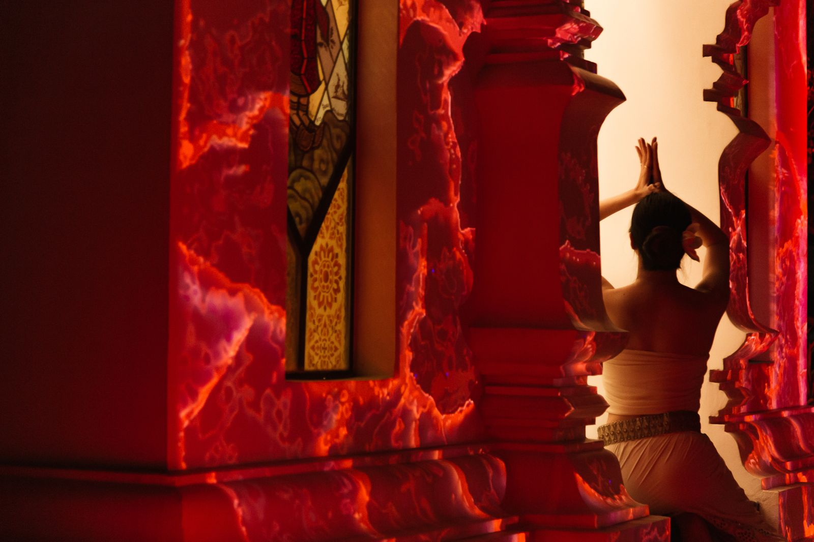
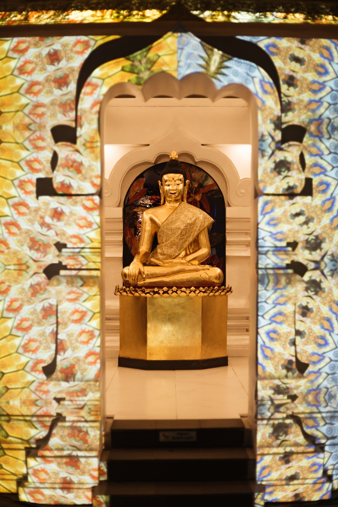

An immersive performance at Wat Pan Ping, Chiang Mai, where technology, music and projection mapping carry a collective spiritual journey through the Four Noble Truths. Made with Psychedelic Thailand, Sound Mandala, tomorrow.lab, VibeMai, Sweet Area Production and Samsee Production.
